Étudiant en 1ère année de BUT Réseaux et Télécommunications
IUT Clermont Auvergne / Aubière (63)
À propos de moi
Je suis Noa QUENET, je suis étudiant en 1ère année de BUT Réseaux et Télécommunications à l'IUT Clermont Auvergne à Aubière(63).
Dès ma première générale, j'ai pu réaliser plusieurs projets dans la spécialité "Sciences de l'ingénieur" dans laquelle des réseaux informatiques étaient le centre de ces sujets. Ces projets ont donc attiré ma curiosité et m'ont incité à choisir cette formation.
J'ai 18 ans, je viens d'Ecuisses en Saône-et-Loire (71).
Je suis curieux, sérieux et persévérant.
Je recherche un contrat d'alternance sur le rythme "un mois un mois" pour la rentrée de septembre 2025 dans lequel je peux mettre en pratique mes compétences acquises durant mes études.
Formation
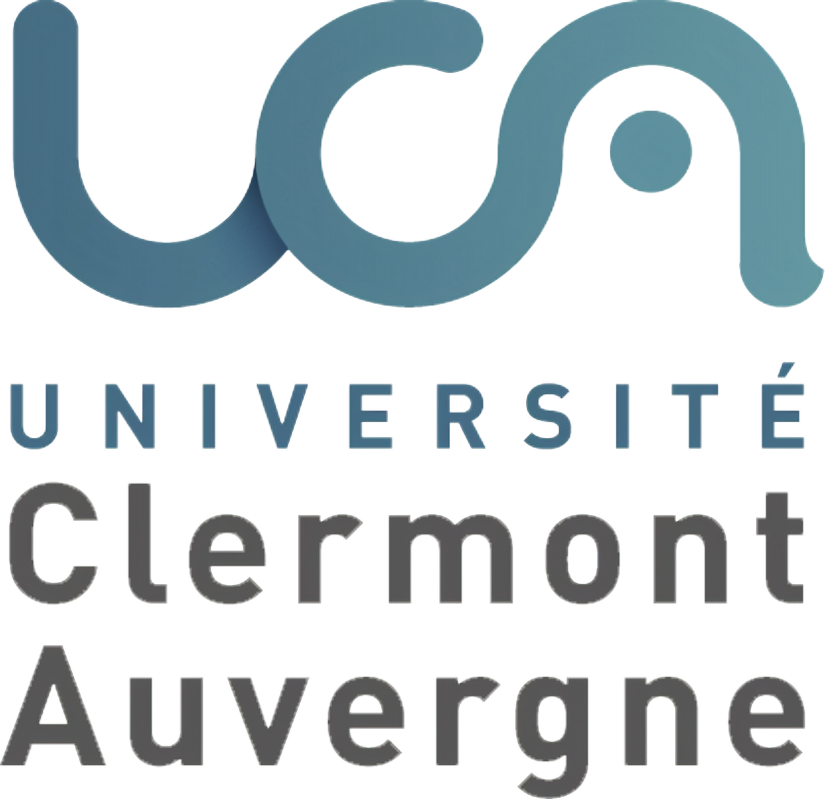
Septembre 2024 - IUT Clermont Auvergne (63)
Admission en 1ère année de Bachelor Universitaire et Technologique en Réseaux et Télécommunications à l'IUT de Aubière (63)
Débouchés professionnels de cette formation : administrateur réseau, technicien en télécommunications et réseaux.
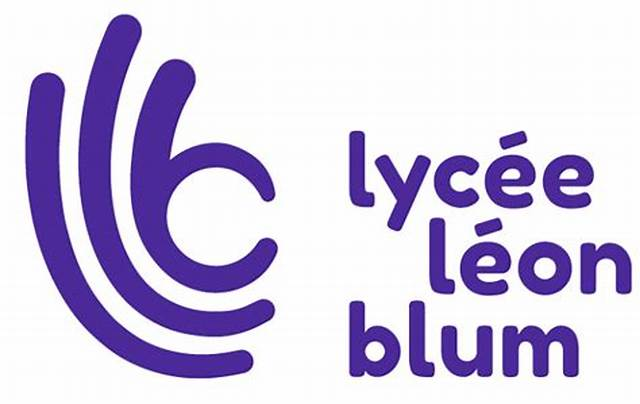
Juin 2024 - Lycée Léon Blum (71)
Obtention du baccalauréat général avec mention bien au Lycée Léon Blum à Le Creusot (71)
Spécialités : Mathématiques et Physique-Chimie
Expérience profesionnelles
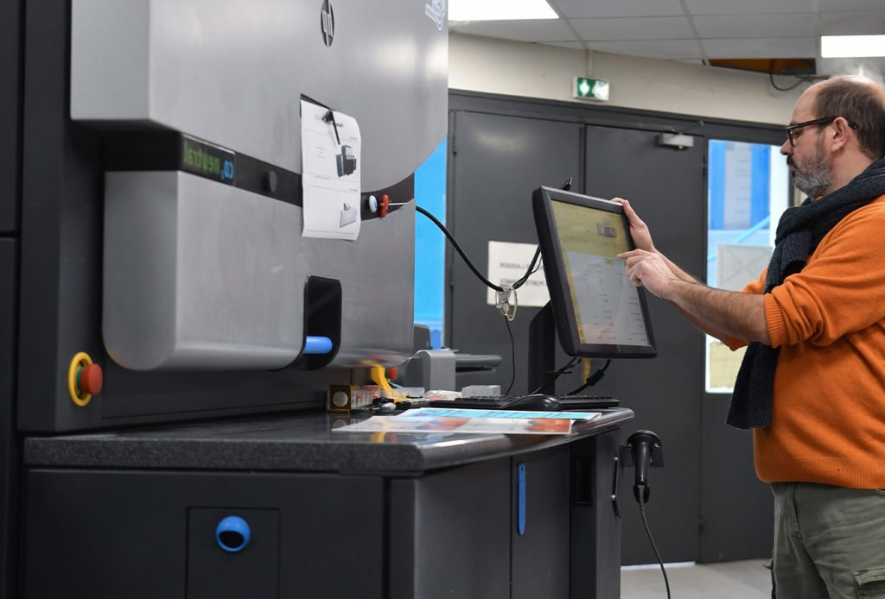
Stage de 3ème
J'ai pu effectuer mon stage de 3ème dans une entreprise d'imprimerie nommée "HD Publicité" (71). Lors de ce stage en imprimerie, j'ai acquis des compétences professionnelles mais aussi personnelles. J'ai pu observer et pratiquer la manière de travailler en tant que technicien numérique. J'ai dû notamment faire preuve de précision et respecter les procédures pour garantir un travail de qualité. Ce stage m'a permis d'approfondir ma rigueur en respectant les consignes que le client émet avant toute impression ou réalisation.
Compétences techniques
Réseaux
70%*
Télécommunications
90%*
Programmation web
85%*
Téléphonie
80%*
* Les jauges correspondent aux pourcentages de compétences acquises selon les attentes des encadrants de chaque matière pour le premier semestre de première année.
Réseaux
Lors du premier semestre, j’ai développé des compétences en réseaux. Dans le cadre d’un TP d’initiation réseaux, j’ai appliqué mes connaissances à l’aide du logiciel Cisco Packet Tracer, un outil permettant de concevoir, gérer et modifier des réseaux. J’ai élaboré un plan d’adressage IP comprenant des adresses IP, des masques de sous-réseaux et des passerelles, permettant ainsi à toutes les machines de communiquer entre elles. Au départ, j’ai rencontré des difficultés à identifier les erreurs d’adressage. Cependant, grâce à ma persévérance, j’ai su analyser les problèmes et les résoudre efficacement.
Télécommunications
J'ai développé des compétences en télécommunications. Au cours de travaux pratiques, j'ai eu l'occasion de manipuler des équipements délicats tels que des fibres optiques et des appareils de mesure. Ces travaux pratiques m'ont permis d’apprendre la nécessité de faire preuve de minutie et de rigueur. Par exemple, l'objectif d'un des travaux pratiques était de déterminer l'atténuation d'un signal en fonction de la distance entre l'émetteur et le récepteur. Pour mener à bien cette série de mesures, j'ai compris que la rigueur est une compétence clé afin de réussir ces travaux pratiques.
Programmation web
Lors du projet consistant à la création de mon portfolio, j’ai pu développer mes compétences en programmation web. J’ai approfondi mes connaissances en HTML et CSS, des langages essentiels pour la création et la mise en page de sites Web. En particulier, j’ai été amené à intégrer des barres de progression pour mettre en valeur des compétences. Face aux difficultés rencontrées pour les implémenter correctement, j’ai mené de nombreuses recherches et, grâce à ma persévérance, j’ai réussi à identifier et corriger mes erreurs. Ce processus m'a permis d'améliorer ma page web tout en renforçant mes compétences en programmation web.
Téléphonie
J'ai réalisé plusieurs travaux pratiques en téléphonie au cours desquels j'ai pu développer et renforcer diverses compétences techniques. Ces TP m'ont permis de mieux comprendre le fonctionnement des réseaux téléphoniques, de manipuler des équipements spécifiques et de configurer des systèmes de communication. Grâce à cette expérience, j'ai acquis une meilleure maîtrise des protocoles de téléphonie, ainsi qu'une capacité à diagnostiquer et résoudre des problèmes techniques dans ce domaine.
Compétences humaines
Esprit d'équipe
Rigueur
Persévérance
Esprit d'équipe
J'ai développé l'esprit d'équipe grâce à ma pratique du football. Ce sport m’a appris à communiquer efficacement et à mettre l’accent sur la réussite collective plutôt que sur les performances individuelles.
Rigueur
La rigueur est une compétence essentielle pour moi, dont j'ai pu mettre en pratique cette compétence dans les séries de travaux pratiques de télécommunications par exemple. Ces exercices m’ont appris à respecter les procédures, à analyser les résultats avec précision et à maintenir une approche méthodique pour résoudre des problèmes techniques.
Persévérance
La persévérance se retrouve dans le travail que j'effectue. Lorsque je me fixe un objectif, je fais tout pour l'atteindre et je n'aime pas interrompre mon travail tant qu'il n'est pas fini.
Compétences linguistiques
Espagnol
B1
Anglais
B1
Projets
Se sensibiliser à l'hygiène informatique et à la cybersécurité
S.A.E 11
Portfolio
S.A.E 14
Mettre en place une solution informatique pour une entreprise
S.A.E 23
Se sensibiliser à l'hygiène informatique et à la cybersécurité
Contexte :
Projet du BUT réalisé en binôme.
Objectif :
L'objectif est de créer un diaporama sur un sujet portant sur l'hygiène informatique et la cybersécurité afin de chercher à sensibiliser des personnes quelconques sur ce sujet.
Mission :
Pour ce projet, nous avons dû réaliser un diaporama sur le sujet de "La gestion des vulnérabilités", dans lequel plusieurs tâches étaient essentielles à réaliser afin que d'autres personnes puissent comprendre les termes que nous utilisions. Pour cela nous devions essayer de vulgariser tous les termes au maximum qui sembleraient compliqués pour toutes personnes quelconques afin qu'elles puissent suivre notre diaporama sans difficulté. De plus, nous devions illustrer nos propos à l'aide de schémas afin de favoriser la compréhension de notre auditeur.
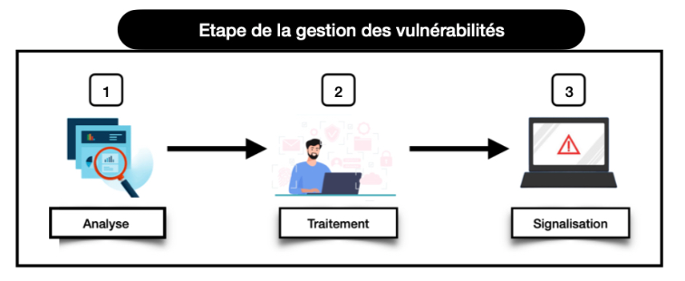
Schéma réalisé sur la gestion des vulnérabilités
Résultat : 15/20
A la fin de ce projet, nous avons pu développer notre compétence en explication de propos mais surtout en vulgarisation. De plus, nos recherches effectuées nous ont permis de développer nos compétences et notre culture dans l'hygiène informatique et en particulier sur la gestion des vulnérabilités.
Portfolio
Contexte :
Projet du BUT réalisé seul.
Objectif :
L'objectif principal est de créer une page web claire, lisible et facile d'utilisation. Cette page servira de portfolio pour se présenter à de futurs employeurs, tout en facilitant l'accès à des informations clés.
Mission :
Pour ce projet, j'ai dû créer une page web en code HTML avec une mise en forme en CSS. Pour cela, j'ai dû créer la structure de la page en définissant la navigation et la disposition du contenu. En effet, j'ai utilisé différentes balises pour créer la page, telles que la balise "nav" qui servira à naviguer sur le site de façon intuitive, les balises "img" qui permettent d'insérer des images et les balises "p" pour insérer du texte.
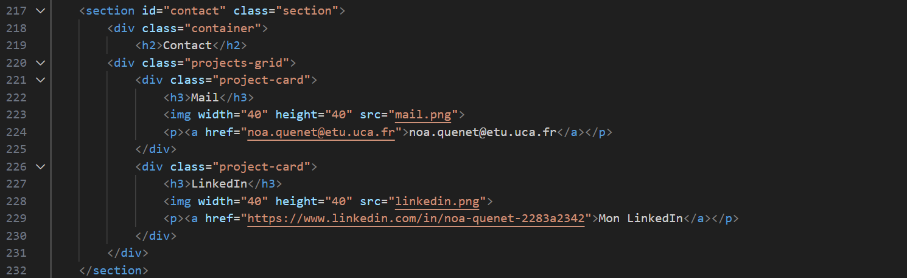
Extrait de mon code HTML
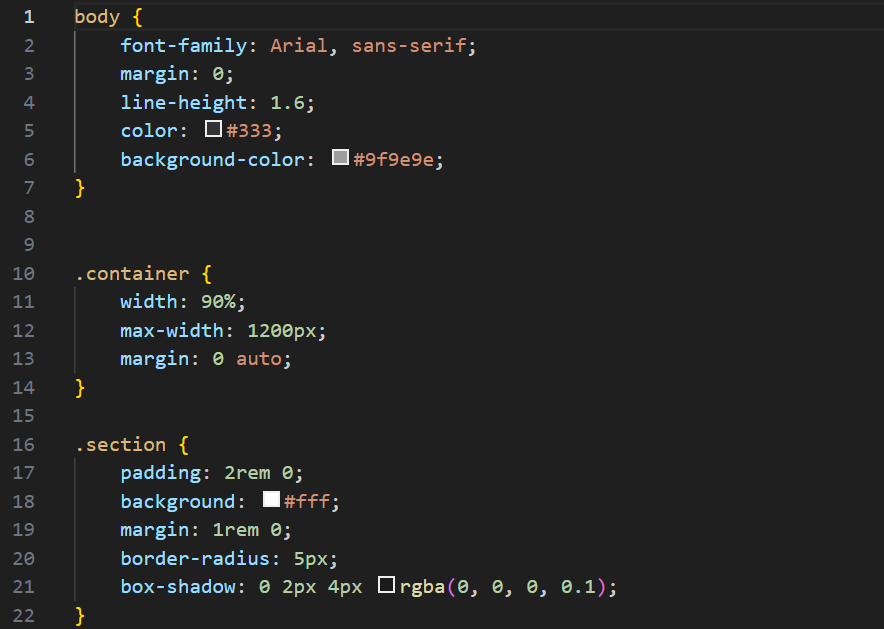
Extrait de mon code CSS
Résultat :
A la fin de ce projet, j'ai acquis des compétences en programmation web. En effet, j'ai réussi grâce à ma persévérance à déterminer mes erreurs et à les résoudre. Ce processus m'a permis d'optimiser l'interface utilisateur et d'améliorer la fonctionnalité d'une page Web, renforçant ainsi mes compétences en programmation web de manière significative.
Mettre en place une solution informatique pour une entreprise
Contexte :
Projet du BUT réalisé seul.
Objectif :
Dans cette SAE, l'objectif est de mettre en place un site web de gestion de tickets de support pour le service informatique de l’université. Cette application vise à faciliter la création, le suivi, la gestion, et la résolution des tickets de support technique par les utilisateurs, les techniciens et les administrateurs du service DSI.
Mission :
Pour mener à bien ce projet, j'ai utilisé l’environnement Node.js associé à une base de données NoSQL. Le développement s'est fait en JavaScript avec l’utilisation de MongoDB. Il s’agit de concevoir une application full-stack comprenant un côté client et un côté serveur. Étant donné que le côté client est déjà fournie, mon travail s'est concentré essentiellement sur le développement du côté client. Afin d’améliorer la clarté et la gestion du code, j'ai procédé à une réorganisation de la structure du côté serveur en créant des dossiers dédiés aux routes, aux contrôleurs, ainsi qu’aux images
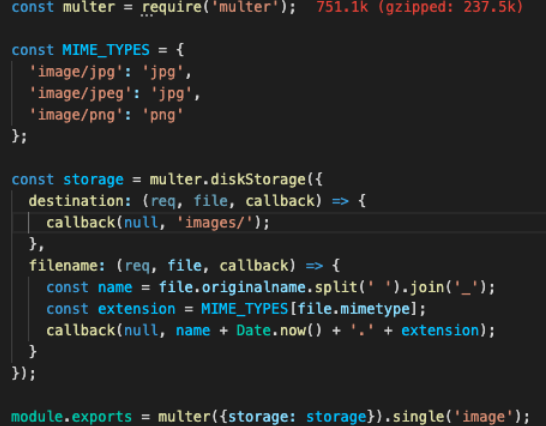
Extrait de mon code dans le dossier "images"
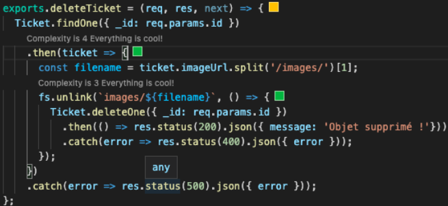
Extrait de mon code dans le dossier "routes"
Résultat :
Grâce à ce travail, j’ai acquis des compétences en support de gestion de tickets, en manipulation de bases de données NoSQL, ainsi qu’en communication client-serveur. J’ai également appris à structurer une application web complète et à gérer les différentes interactions entre les utilisateurs, les techniciens et les administrateurs du système.
Divers
Football
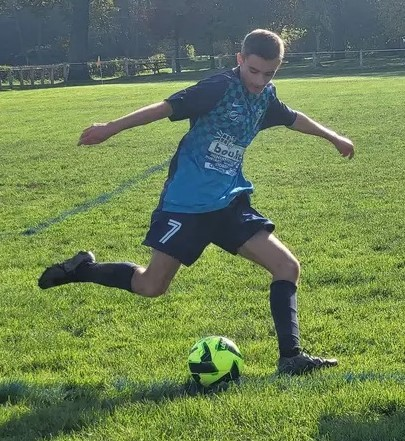
Depuis mes 12 ans, je pratique le football au FC Marmagne (71) dans le championnat départemental de Saône-et-Loire (D2) au poste de milieu de terrain. Le football est un sport essentiel dans ma vie qui m'a permis de développer des compétences essentielles. Jouer en équipe m'a appris l'importance de la coopération et de la communication pour atteindre des objectifs communs. Cette expérience m'a également inculqué la discipline, la gestion des efforts et la persévérance, que ce soit lors des entraînements ou des matchs.
Voyages
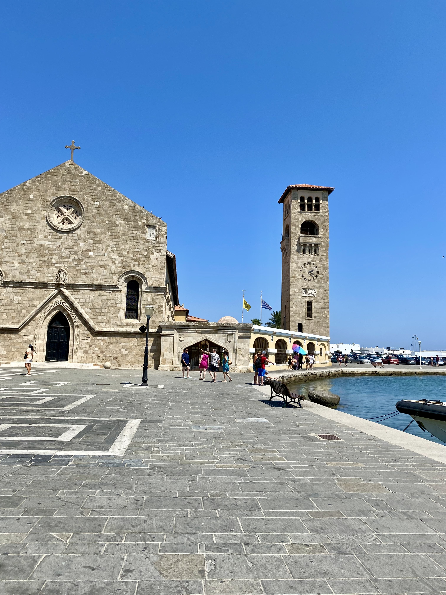
Ville de Rhodes (Grèce)
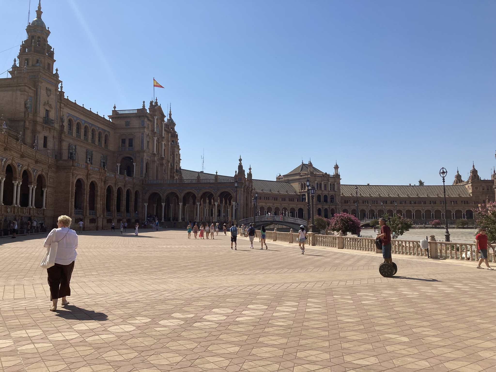
Place d'Espagne (Seville)
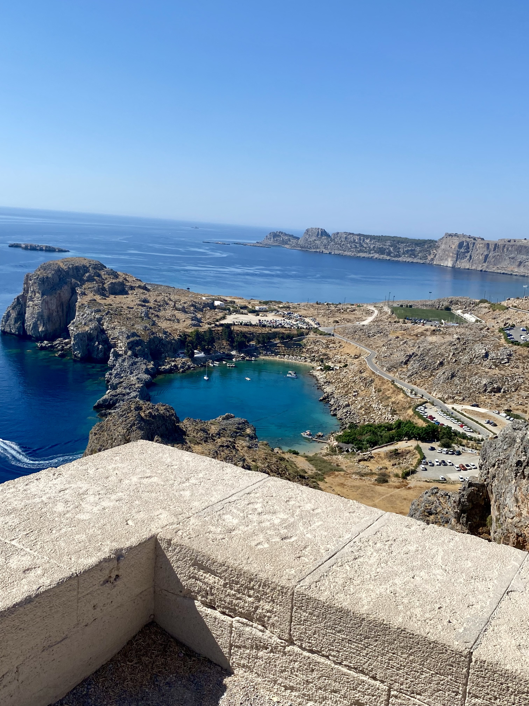
Portugal
Voyager à Rhodes (Grèce), à Punta Umbria (Espagne) et à Faro (Portugal) a été une expérience profondément enrichissante qui a éveillé ma curiosité. Ces pays, riches en histoire et en culture, m'ont permis de découvrir des paysages variés où la sécheresse est considérablement plus importante que la France avec des records de chaleur pouvant atteindre 41°C, par exemple lors de mon passage à Seville (Espagne).